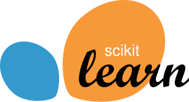
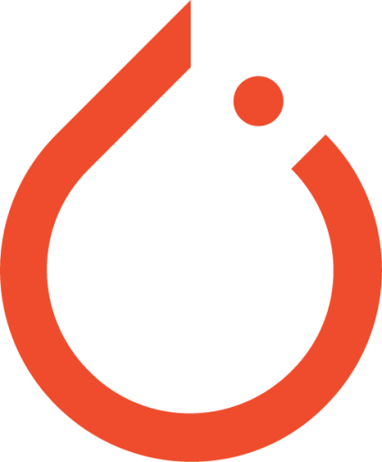

About me
Turning complex data into intelligent, actionable systems — where engineering precision meets AI innovation.
I am a data science graduate passionate about using data and artificial intelligence to solve real-world problems. I enjoy exploring complex datasets, building machine learning models, and transforming data into meaningful insights that support better decision-making.
My interests lie in applied artificial intelligence, machine learning, and intelligent data systems. I am particularly interested in how AI can be used to address real-world challenges in areas such as healthcare analytics, automation, and data-driven decision support.
My long-term goal is to contribute to the development of intelligent technologies that bridge advanced AI techniques with practical real-world applications.
-
01
Design & Implementation of Voice Command Based Bipedal Surveillance Robot
-
02
Humanoid Explorer Robot: Design and Fabrication
Featured Projects
Key Skills
 Python
Python- Excel
 SQL
SQL Power BI
Power BI
Scikit-Learn TensorFlow
TensorFlow
PyTorch Git / GitHub
Git / GitHub Streamlit
Streamlit